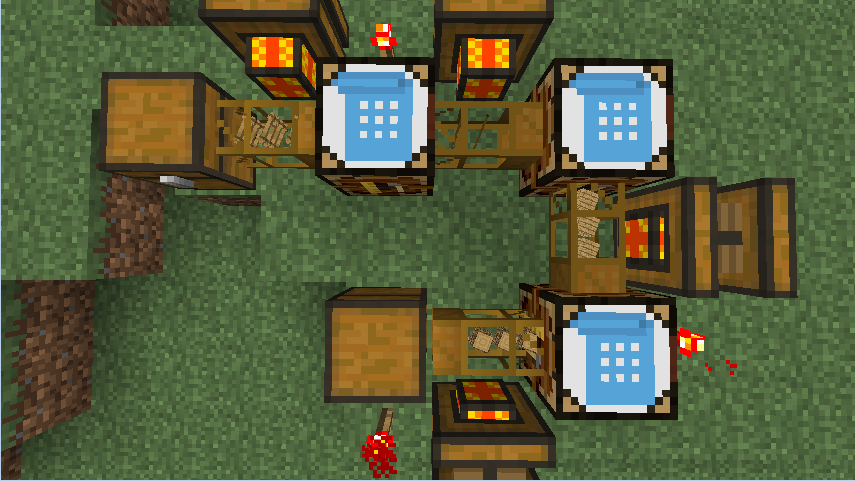

Auto Workbench
from Buildcraft
Recipe

Description
From the player interaction point of view, the auto-workbench acts like a regular crafting table, except that it stores objects. So it is possible to exit the table without dropping the contents that were in the process of being crafted. However, leaving a working recipe in the table will allow pipes to activate the automating crafting mechanisms and pull out objects.
|  |
| an automatic ladder crafting configuration |
In order for the automatic crafting mechanism to be activated, the Auto-Workbench requires more than just one items each in the preserved recipe inside. To pull the crafted items, you may use Redstone Engines or Autarchic Gates as shown above.
NOTE: Non-stackable items (e.g. tools, buckets) cannot be inserted into the auto-workbench. The Advanced Crafting Table, however, can as it is an upgrade to the auto-workbench.
Video
Intro Video by Minecraft in Minutes
About
Crafting Guide gives step-by-step tutorials for making anything in Minecraft or its many mods. Just say what you'd like to make, what you already have, it will do the rest, giving you a list of raw materials you need to collect and step-by-step instructions of how much to make of which items in the proper order. You can even ask it to include the materials and instructions for all the tools you'll need along the way!
Donate
Crafting Guide is free for all, but if you find it helpful, donations in any amount are gratefully accepted.
Get Involved
Crafting Guide is completely open-source, and you can help! Whether you want to write a recipe book (all simple JSON), or implement new features, just head over to GitHub to get started.